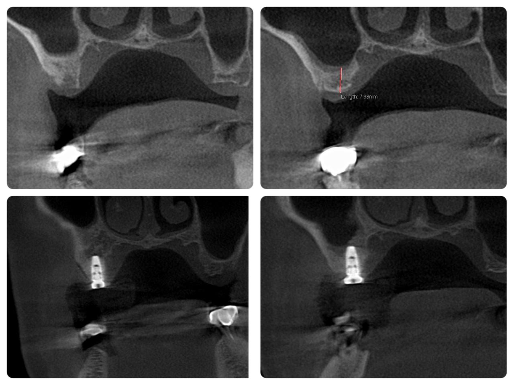
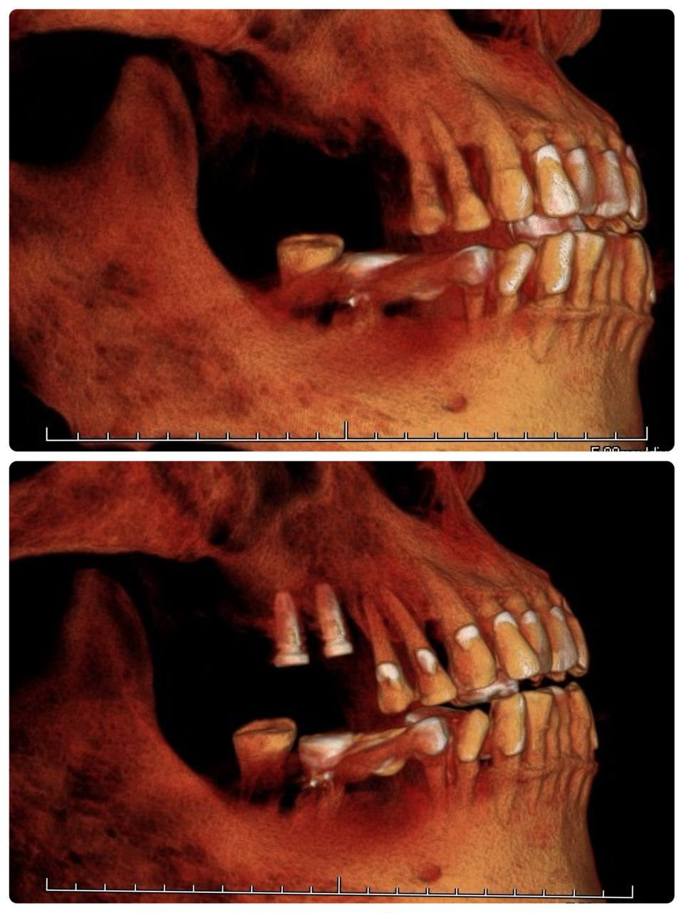

患者右上第一大臼齒（Tooth #16）長期缺牙。經臨床及錐狀射束電腦斷層（CBCT）評估，缺牙區因長期缺乏刺激，導致齒槽骨吸收且上顎竇氣化（Sinus Pneumatization），殘餘骨高度（Residual Bone Height, RBH）極為有限。

58 歲男性患者，右上後牙區（#16–#18）牙橋因病變於半年前拔除，經半年的骨頭癒合期後，今日進行右上後牙區植牙重建評估與手術。經 CBCT 評估，#16 區域骨量充足、可直接植入；#17 區域受上顎竇氣化影響，剩餘齒槽骨高度約為 7.38 mm，需採取內提式上顎竇增高術並填補骨粉。
#17 植體頂端順利藉由內提術式抬升上顎竇底膜，骨粉順利填入並完整包覆植體根尖（Apical area）。術後影像顯示骨粉均勻包覆於植體末端，隨著骨整合與重塑過程，將逐漸沉積並充實至 #16 與 #17 植體根尖周圍，提供穩固長遠骨質支撐。
兩顆植體均呈現極佳之植入角度與三維位置，#16 與鄰牙及咬合平面維持理想關係，#17 在內提補骨後獲得穩固支撐，整體重建規劃完善。

術後CBCT影像顯示兩顆植體精確植入位置，#17 上顎竇底膜順利抬升，骨粉均勻包覆植體根尖。術前規劃影像精確評估 #17 剩餘骨高度 7.38 mm，為內提術式提供可靠依據。兩顆植體軸向與咬合平面均呈理想關係。